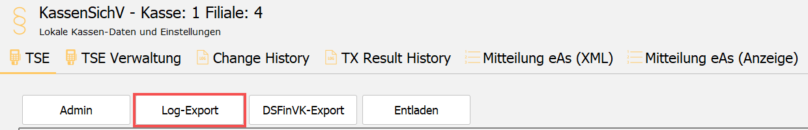

TSE-TAR exportieren
Der TSE-TAR-Export liefert die von der TSE selbst aufgezeichneten und signierten Transaktionen. Er wird bei einer Prüfung angefordert und ist gleichzeitig die einzige Sicherung der TSE-Daten.
So gehen Sie vor
-
Ins Admin-Panel wechseln.
-
Punkt KassenSichV öffnen.
-
Log-Export wählen.

-
Den gewünschten Zeitraum eintragen.
-
Ein Exportverzeichnis wählen.
-
Export starten.
Die TSE erstellt den Export, die Kasse legt ihn im gewählten Verzeichnis ab. Je nach Zeitraum kann das längere Zeit dauern.
Ergebnis prüfen
Im gewählten Verzeichnis liegt die TAR-Datei. Sie lässt sich mit einer Prüfsoftware verifizieren — damit prüfen Sie zugleich, ob die Sicherung vollständig ist.
Regelmäßig exportieren
Die TSE ist Hardware und kann ausfallen. Ohne regelmäßigen TAR-Export fehlt dann der Nachweis für den gesamten Zeitraum seit dem letzten Export — die Aufbewahrungspflicht ist damit verletzt.
- Häufigkeit und Durchführung liegen beim Betreiber. Empfehlen Sie einen festen Rhythmus und legen Sie ihn in der Verfahrensdokumentation fest.
- Die Sicherung gehört auf einen anderen Datenträger als den, auf dem die Kassendatenbank liegt.
- Prüfen Sie die Sicherung regelmäßig auf Vollständigkeit — der TAR-Export lässt sich mit Fremdsoftware verifizieren.
Bei einer Prüfung
Fordert ein Prüfer einen langen Zeitraum an, klären Sie mit ihm, ob der Export in mehrere zeitliche Abschnitte und damit mehrere Dateien geteilt werden darf. Das verkürzt die Laufzeit erheblich.
Beachten Sie zusätzlich die Hinweise unter ITR Partner Service → Fiskalisierung → DSFinV-K exportieren im Abschnitt „Was Prüfer wissen sollten" — dort steht, warum der Abgleich zwischen TAR- und DSFinV-K-Export bei älteren Versionen Abweichungen melden kann.
Kein zentraler Export
Der TSE-TAR-Export ist ausschließlich an der Kasse möglich, weil die Daten direkt von der TSE abgefragt werden. Ein zentraler Export über den CentralPoint ist nicht realisierbar, auch nicht zu Testzwecken.
Bei einer Cloud-TSE liegt der Fall anders: Die Kasse unterstützt diesen Export dort nicht. Der TAR-Export einer aktiven Cloud-TSE läuft derzeit über den ITR-Service. Siehe ITR Partner Service → Fiskalisierung → Cloud-TSE (fiskaly) in Betrieb nehmen.
Eine bereits inaktive Hardware-TSE lässt sich ab Version 5.51 weiterhin über das Admin-Panel exportieren.
Weitere Informationen
- ITR Partner Service → Fiskalisierung → Abgelaufene TSE austauschen
- ITR Partner Service → Fiskalisierung → TSE außer Betrieb nehmen